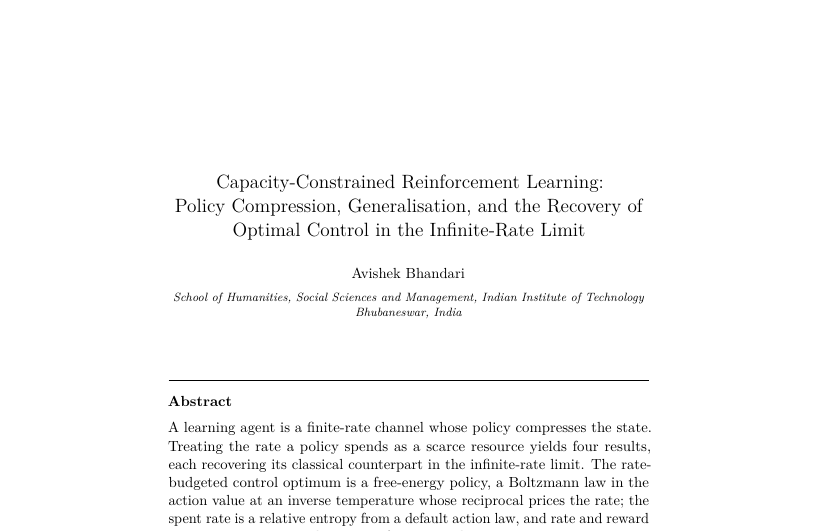

WORKING PAPER16 ppFoundations
Capacity-Constrained Reinforcement Learning: Policy Compression, Generalisation, and the Recovery of Optimal Control in the Infinite-Rate Limit
Working paper · Entronomics programme
Any agent that learns to act faces a bandwidth limit: it can only carry so much about the world into each decision, so its behaviour is a lossy summary of what it sees. This paper treats that information budget as a scarce resource and shows what optimal learning becomes once it is priced. Four familiar objects, the optimal policy, the state representation, the learning dynamics, and the generalisation gap, turn out to be one family of rate-versus-fidelity trade-offs, each collapsing to the textbook version when information is free. A small, fully reproducible tabular study illustrates each result. The results are shown for finite tabular problems and Gaussian representations, and one limit is firm: more capacity buys sharper control, never foresight of a genuinely random world.

Working paper
Full text in preparation
This working paper belongs to the Foundations movement of the Entronomics programme. The full manuscript is being prepared; the abstract and its place in the programme are above. The forthcoming book draws the movements together.